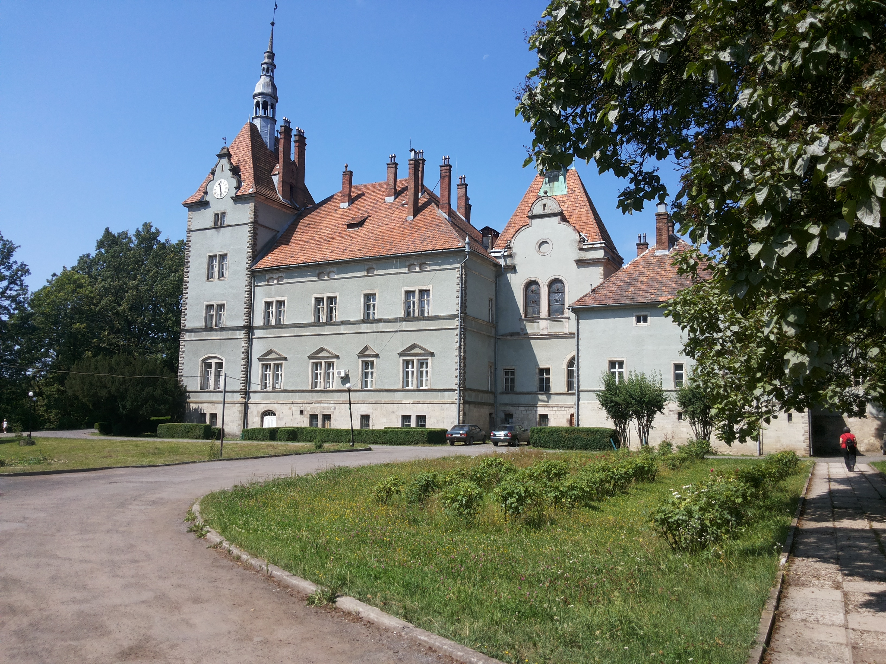
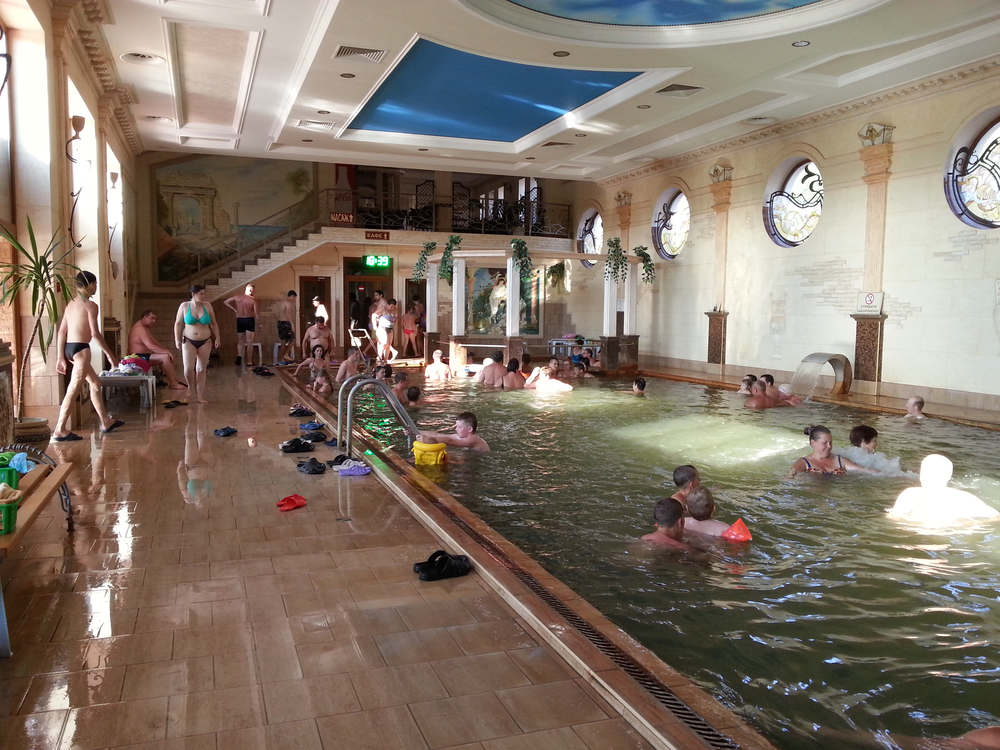
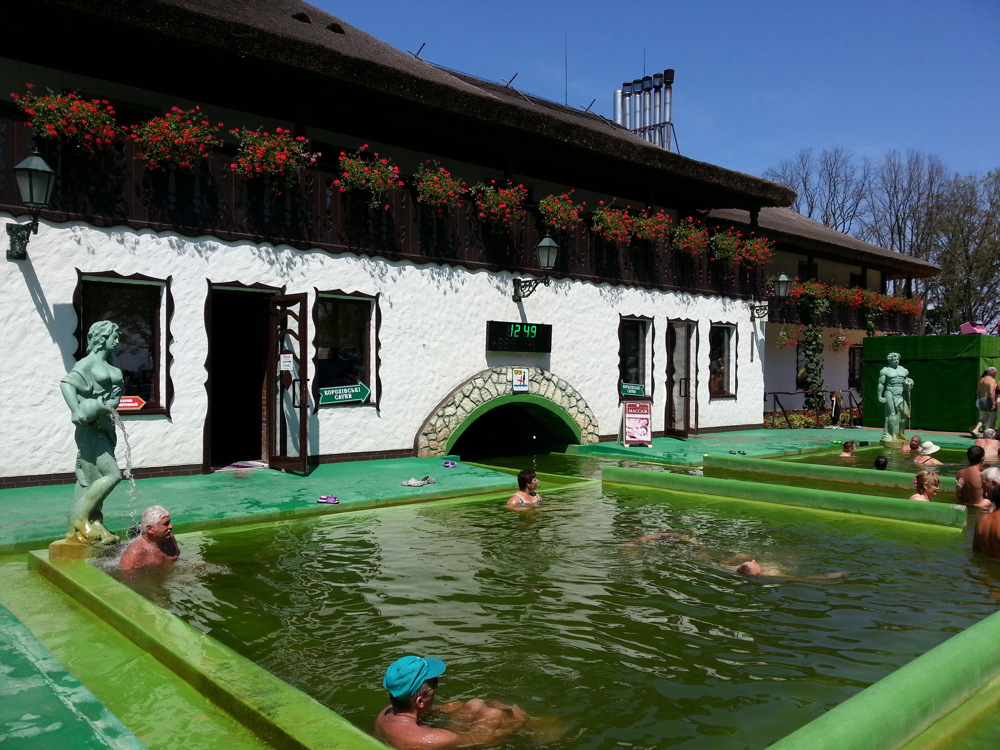
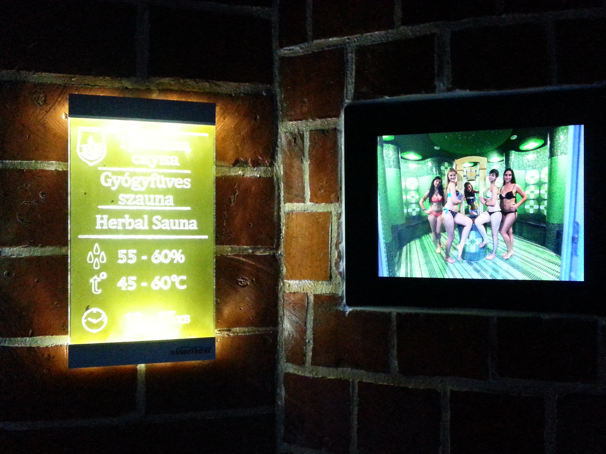
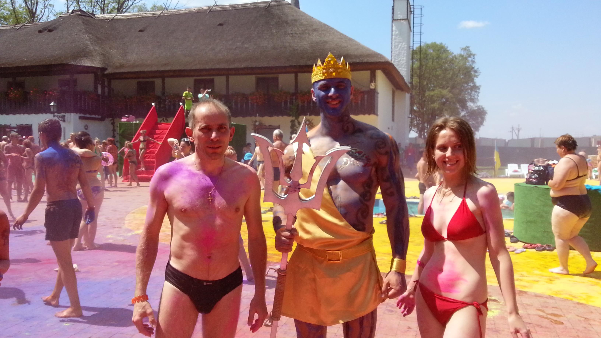
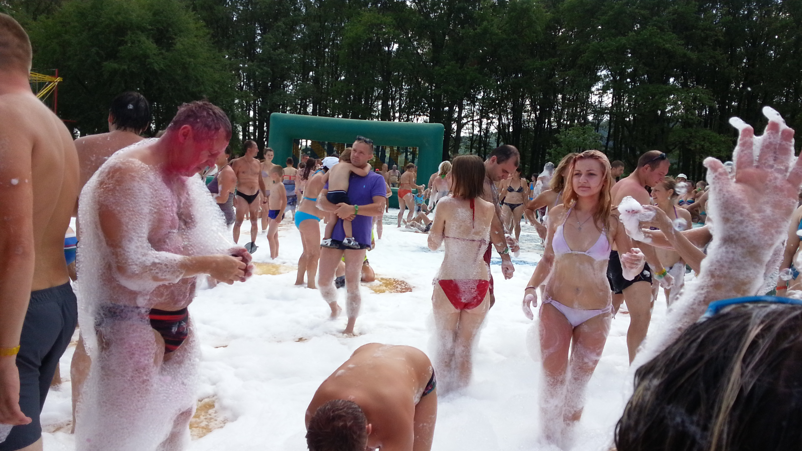
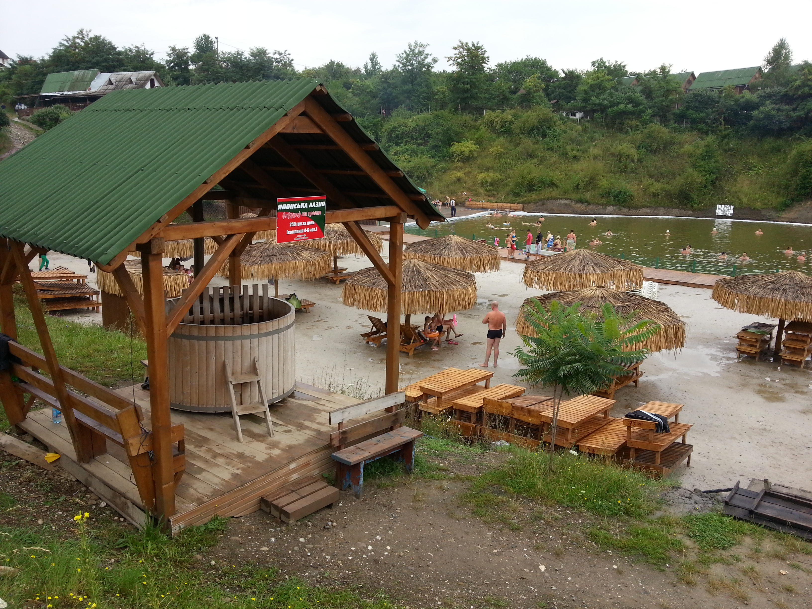
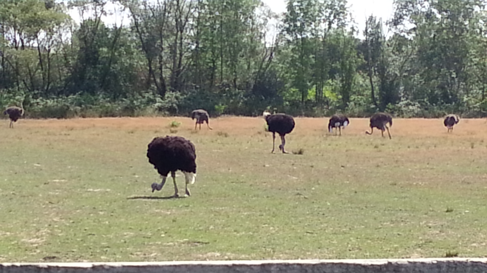

Рекреаційні ресурси Закарпаття
Курортна-рекреаційна та туристична — мережа Закарпаття налічує 15 санаторіїв, 16 санаторіїв-профілакторіїв, 25 баз відпочинку і 3 пансіонати. Найбільш відомі серед них: «Сонячне Закарпаття», «Поляна», «Джерело Кришталеве», «Квітка Полонини», «Верховина», «Карпати», «Перлина Карпат», «Синяк», «Шаян», «Гірська Тиса», «Кооператор», Українська алергологічна лікарня у Солотвино, «Квасний потік», «Човен», «Сойми», «Солені Млаки», «Жайворонок». Усе це є невід'ємною складовою
Закарпатської області України
(Перелік туристичних закладів неостаточний)
Клімат Закарпаття помірно-континентальний; завдяки Карпатам, що охороняють Закарпаття з півночі, він тепліший від інших частин України, розташованих в такій самій географчній широті. Клімат зокрема сприятливий на низовині й підгір'ї та дозволяє вирощування садів і винограду, і навіть деяких субтропічних рослин (температура Ужгорода на висоті 132 м: в січні —3,1°С; в липні +20,1 °C; 770 мм опадів); в горах клімат змінюється залежно від висоти (наприклад, Ясіня на висоті 652 м — в січні —7,7°С, в липні +16,9 °C, 1 030 мм опадів).
Зміст
- Замок Шенборнів
- Берегове
- Косино
- Солотвино
- Синевир
- Страусина ферма
- Посилання
Замок Шенборнів
Пал́ац Ше́нборнів — колишня резиденція та мисливський будинок графів Шенборнів, а з 1946 року — санаторій «Карпати». Розташований у селі Карпати (Мукачівський район, Закарпатська область). Станом на 2011 рік входить до ЗАТ «Укрпрофоздоровниця».

Берегове
(угор. Beregszász (Береґсас), нім. Bergsaß) — місто обласного підпорядкування в Закарпатській області, районний центр Берегівського району[2].
Берегове розташоване в межах Закарпатської низовини, при західних відрогах Берегівського низькогір'я, над річкою Верке, за 70 км на південний схід від Ужгорода, близько 5 км від перетину кордону з Угорщиною Лужанка-Берегшурань. Берегове славиться своїми виноробськими традиціями. В околицях міста розвідані термальні й мінеральні води, що сприяють одужанню серцево-судинної системи та лікують хвороби шкіри.
(На теренах м. Берегова власне є 2 лікувальних заклади - державний та приватний )

Косино
Косино́ — село в Україні, в Мукачівському районі Закарпатської області. Відстань до райцентру становить близько 11 км і проходить автошляхом Т 0726.
У період Австро-Угорської імперії — село Мукачівського округу Березького комітату. Офіційна назва — Коцкосалаш (угор. Koczkaszállás). Село мало свою символіку — печатку з зображенням гори, під якою росте дуб; праворуч від дуба - сидячий птах в обрамленні лаврового вінка (офіційний зразок печатки було затверджено Міністерством внутрішніх справ Королівства Угорщини 1904 року).

Термальні басейни
Термальні купальні Косино — рекреаційно-відпочинковий об'єкт, зона відпочинку «Шошто-Термал», розташований в селі Косонь Закарпатської області Берегівського району. Локалізовані в зоні залягання мінеральних термальних вод.
Басейни наповнюють гарячою мінеральною водою, яку викачують глибинними насосами зі свердловин..

Сауни
Крім оздоровчих процедур, в санаторіях Косино Ви зможете взяти участь в екскурсіях, познайомитися з карпатським колоритом і кухнею, побачити красу цієї землі, подивуватися її красою і закохатися в неї назавжди!
В оздоровчому комплексі також працюють 7 лазень і саун, які приносять організму загальне оздоровлення, знімають симптоми багатьох хвороб і позбавляють від хронічної втоми.

Розмальовки
Свято фарб «Холлі» є частиною святкування "Дня Нептуна". День Нептуна в Косино – це саме той час, коли можна розпочати марафон літнього відпочинку. Тут Ви чудово проведете час в атмосфері радості і веселощів.

Пінна Дискотека
Денна пінна Дискотека це чудовий спосіб весело провести час у колі друзів.

Солотвино
Соло́твино (Марамороське Солотвино, Солотвин; рум. Slatina, угор. Faluszlatina + Aknaszlatina, словац. Selo Slatina + Slatinské Doly, нім. Salzgruben) — селище міського типу Тячівського району Закарпатської області, розташоване в Мармароській котловині (Верхньотисинська улоговина), на правому березі Тиси.
Населення — 8,8 тис. меш. (2016) — українці, румуни й угорці.
Солотвинські озера є курортною зоною, купання в солоній воді використовуються для лікування опорно-рухового апарату, переломів, радикуліту, псоріазу та інших захворювань. На берегах озер за останні 10-15 років було відкрито велику кількість санаторіїв і баз відпочинку.

Синевир
Синеви́р (інші назви — Синєви́р, Морське Око) — найбільше озеро Українських Карпат. Розташоване в Міжгірському районі Закарпатської області, в гірському масиві Внутрішні Ґорґани. Входить до складу Національного природного парку «Синевир».

Страусина Ферма
Аби подивитися на екзотичних страусів не обов’язково їхати аж до Африки. Понад сотня пернатих птахів перекочували з Намібії у 2002 році та й донині живуть на Закарпатті, на околиці міста Хуст.
Природні умови краю виявилися цілком придатними для життя страусів, а самі вони зовсім невибагливі у їжі – споживають майже все – та не потребують особливого догляду. Проте користі з них чимало.
